CASE STUDY 01 — BACKEND PLATFORM
TalentForge
A production-style, full-stack job portal built around a secure Spring Boot API and a React/Vite frontend. It supports job discovery, applications, employer job management and admin workflows — with JWT authentication, role-based access control, real MySQL persistence, and live cloud deployment on Railway and Vercel.
OVERVIEW
A complete hiring workflow, engineered like a real product.
TalentForge covers the full job-portal lifecycle — browse jobs and companies, save and apply, manage a profile with document uploads, and withdraw applications — while giving employers a console to post jobs and review applicants, and admins the tools to manage companies, promote users and handle contact messages.
The backend is organized into clear domains (auth, security, job, company, user, contact) with a service layer, JPA repositories, Caffeine caching, and observability through Spring Boot Actuator, structured logging and OpenTelemetry. The result is a codebase that reads and behaves like a maintainable production service rather than a demo.
ROLES & CAPABILITIES
Three protected experiences, one system.
Job Seeker
- Register and sign in securely
- Browse active jobs and company profiles
- View full job detail: salary, work mode, deadline
- Save and unsave jobs
- Apply and withdraw applications
- Complete a profile with picture & resume upload
- Track profile completeness before applying
Employer
- Sign in with employer access
- Post new job openings
- View all company jobs
- Update job status
- View applicants for a job
- Review application status
Admin
- Create, update and delete companies
- Search users by email
- Promote a user to employer
- Assign an employer to a company
- View and manage contact messages
ARCHITECTURE
Layered backend, decoupled frontend.
Cross-cutting: Caffeine cache · Spring Boot Actuator · Logback · OpenTelemetry · Grafana LGTM (Docker Compose). Deployed with the frontend on Vercel and the backend + MySQL on Railway.
TECH STACK
What it's built with.
React 19, Vite 7, React Router, Redux Toolkit, Axios, Tailwind CSS
Java 25, Spring Boot 4, Spring MVC, Spring Security, Spring Data JPA, Validation, Actuator
MySQL, with H2 for local and test support
JWT, BCrypt password hashing, CSRF token endpoint
Actuator, Logback, OpenTelemetry, Grafana LGTM via Docker Compose
Railway (backend + MySQL), Vercel (frontend), Docker
API OVERVIEW
Representative endpoints.
All backend routes are exposed under the /api path, with public, jobseeker, employer and admin scopes enforced by Spring Security.
| Domain | Example endpoints |
|---|---|
| Auth | POST /api/auth/login/publicPOST /api/auth/register/public |
| CSRF | GET /api/csrf-token/public |
| Companies | GET /api/companies/publicPOST /api/companies/admin |
| Jobs | GET /api/jobsPOST /api/jobs/employerPATCH /api/jobs/{id}/status/employer |
| Profiles | GET /api/users/profile/jobseekerPUT /api/users/profile/jobseeker |
| Applications | POST /api/users/job-applications/jobseekerGET /api/users/job-applications/jobseeker |
| Admin | GET /api/users/search/adminPATCH /api/users/{userId}/company/{companyId}/admin |
SECURITY
Production-ready security pieces.
- JWT-authenticated requests with Spring Security filters
- CSRF token flow via
/api/csrf-token/public - Role-based authorization across seeker, employer & admin
- Secure, configurable CORS origins
- BCrypt password hashing and validation
- Secrets kept in Railway/Vercel environment variables
SCREENS
A look at the product.
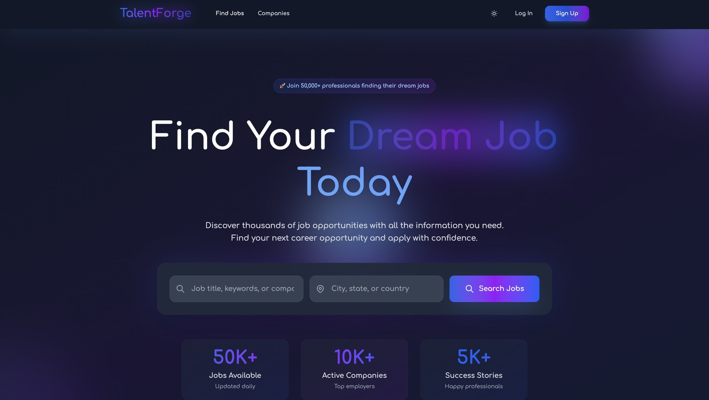
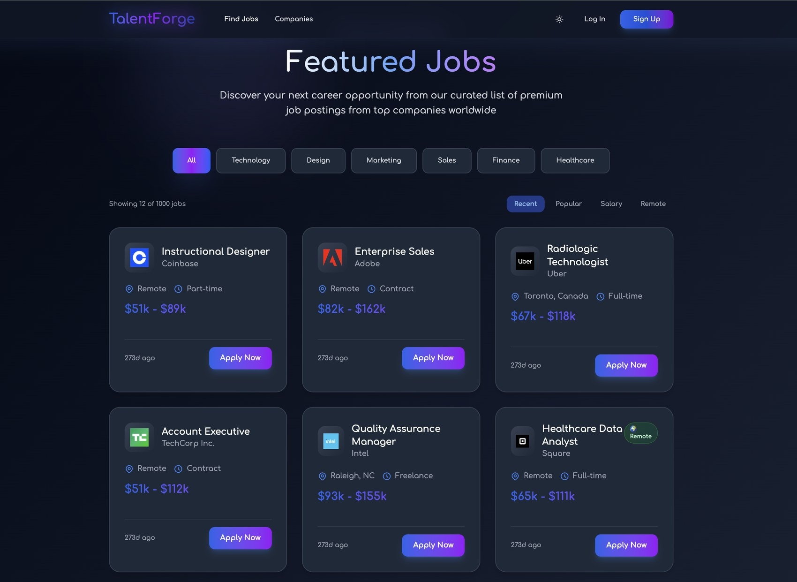
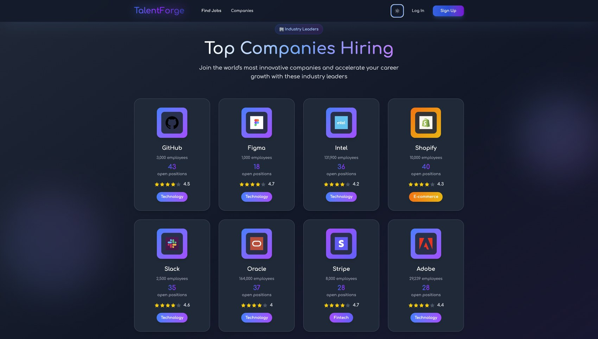
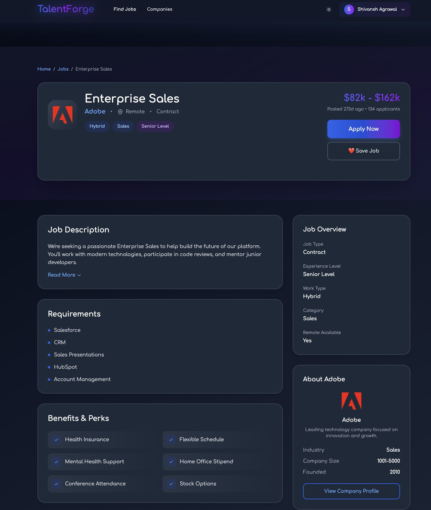
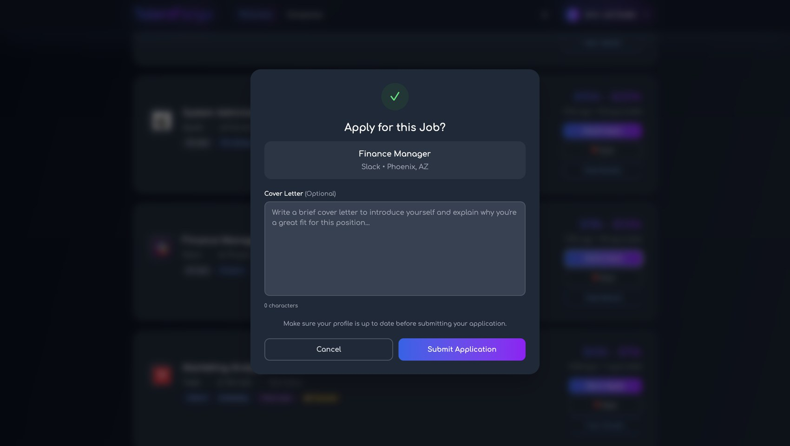
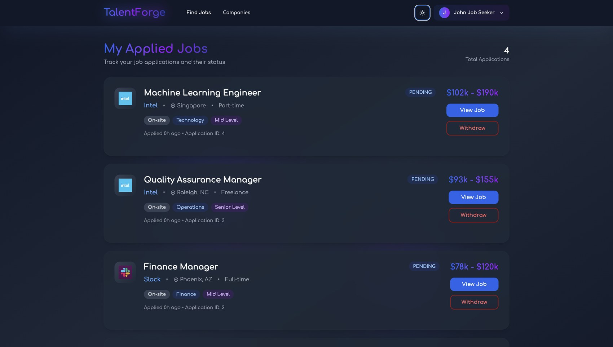
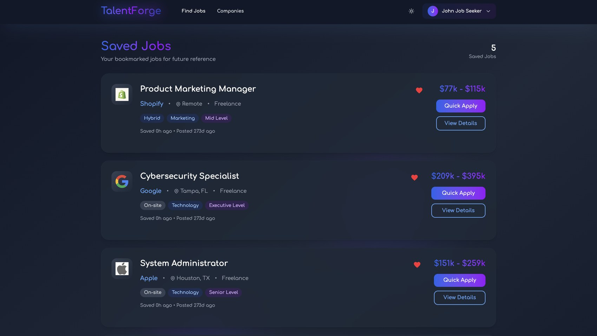
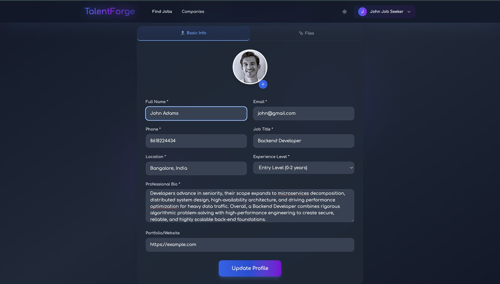
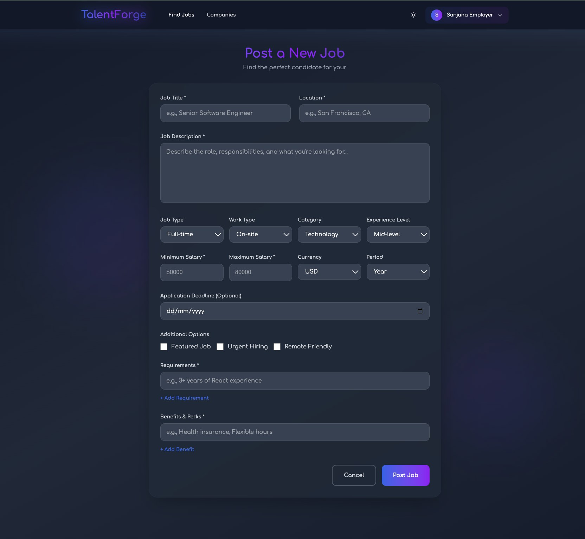
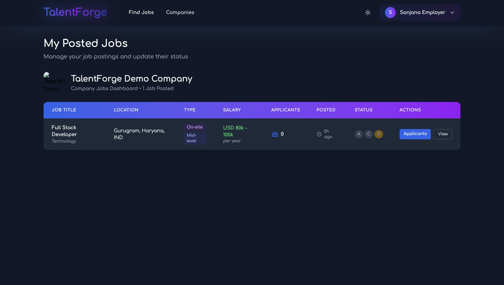
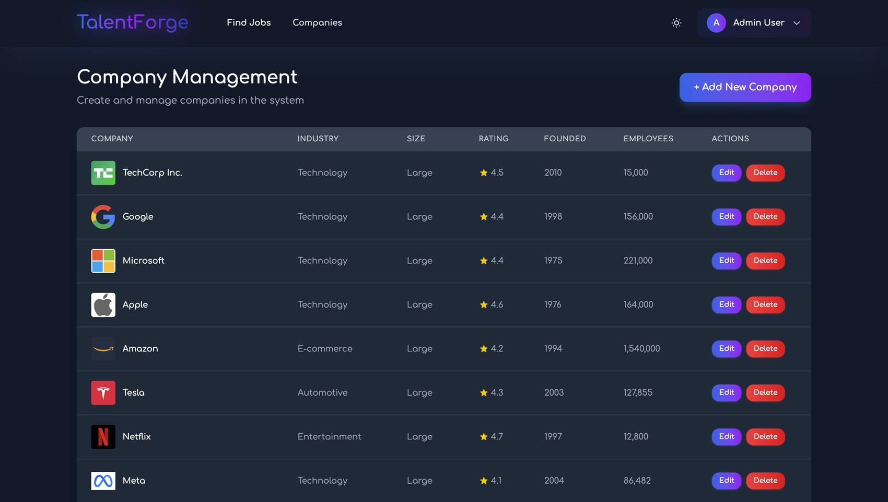
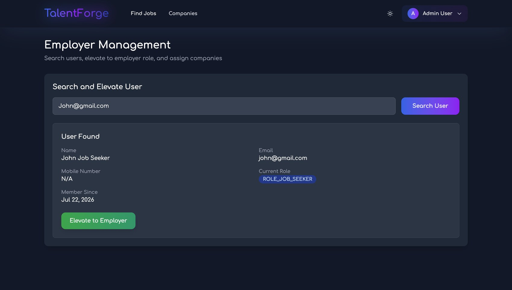